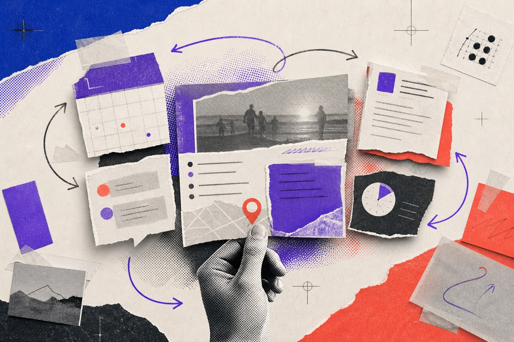
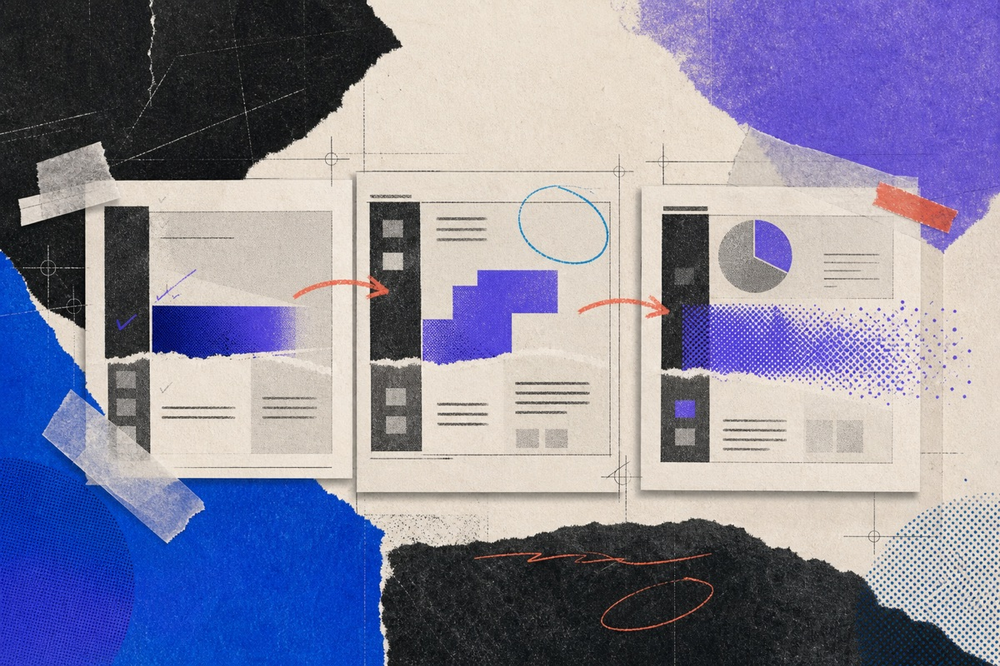
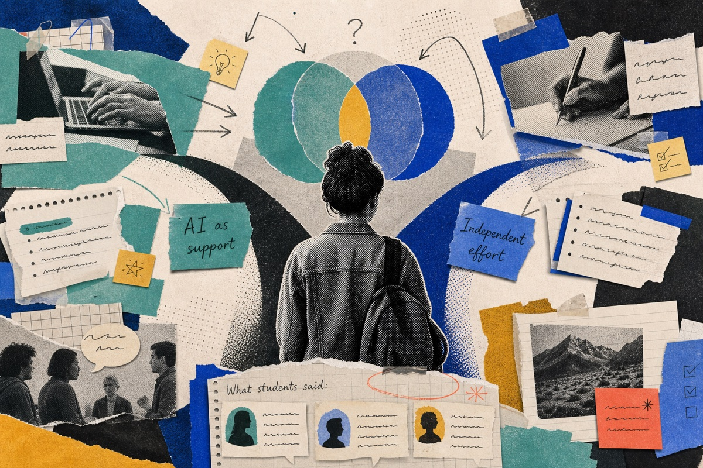
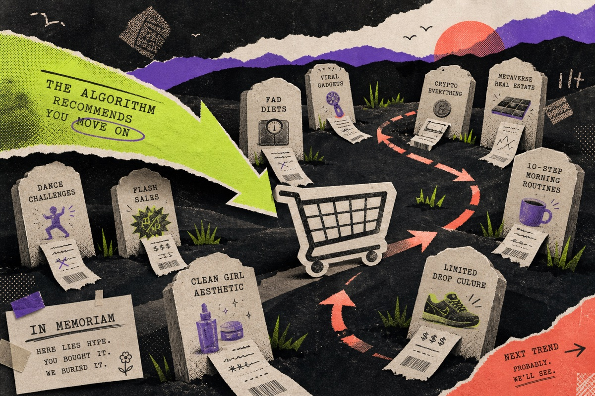
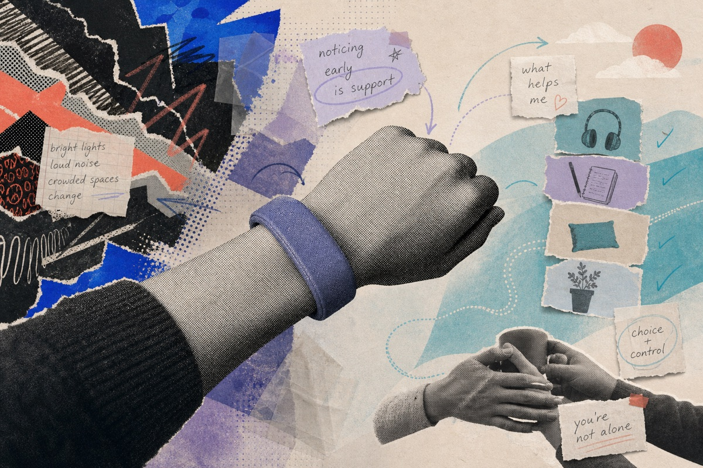
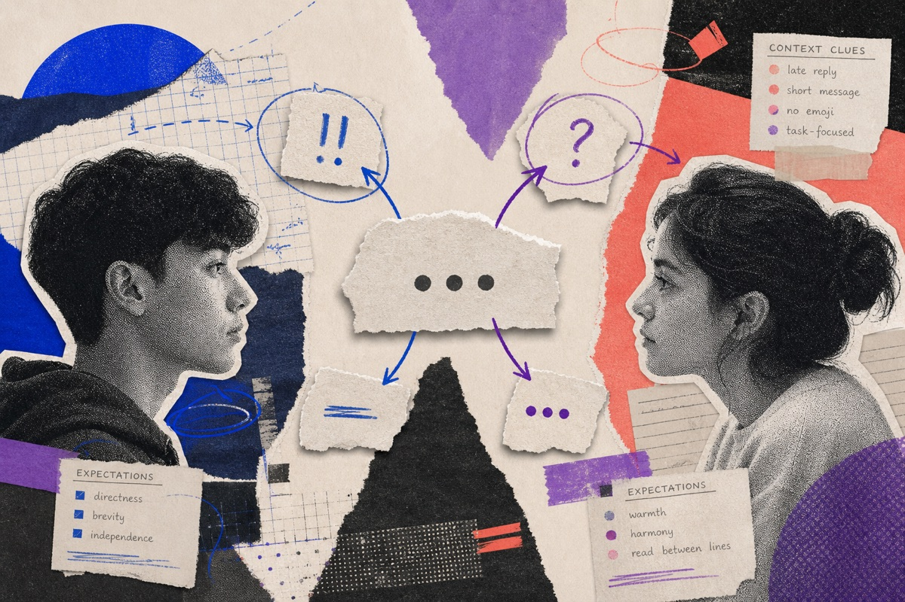

Play
Things I made to explore an idea, learn a material, or make something useful.
A small collection of speculative interfaces, research studies, critical design, and product experiments outside my primary portfolio.
Featured experiments

AI OS
An operating-system concept organized around tasks and context rather than apps

Ephemeral AI
An assistant that appears inside the tools people already use, takes the form needed for the task, and disappears when the work is done

AIducation
A qualitative study of how undergraduates decide when to use or avoid AI tools for coursework

In Memoriam
A satirical intervention that uses a graveyard of expired internet trends to examine algorithmic influence and impulse buying

Boldband
An aid for preventing and assisting during meltdowns associated with Autism

Miscommunication in Texting
A research project examining how tone, context, and cultural expectations shape the interpretation of text messages
Found something interesting?
Send me a note and tell me what you are making.